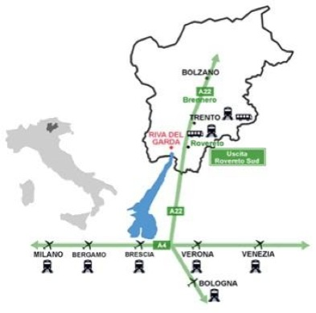

The working conference will take place at the
Riva del Garda Fierecongressi (http://www.rivadelgardafierecongressi.it/)
Loc. Parco Lido, 1
38066 Riva del Garda (TN) - Italy
Tel. +39 0464 520 000 Fax +39 0464 555 255
GPS Coordinates:
Parco Lido
45.884347, 10.844815
TRAVEL INFORMATION:

To get to Riva del Garda, you can book a direct transfer organized by Rivatour or follow these directions:
- At the airport, take the shuttle bus to the train station.
- Take a train to Rovereto.
- Just outside the Rovereto train station, to the right, take the coach number 332 to Riva del Garda. Please, take a look at the timetables by: (i) opening the page timetable; (ii) clicking "Zona 3" in the left-side menu; (iii) selecting the correct coach line "332: Rovereto-Mori-Riva-Arco-Bolognano" in the left-side menu.
To book a direct transfer from and to Verona Airport and from and to Milano Malpensa Airport, please follow the instructions provided here
Groups (3 or more people) may consider reserving a taxi from the airport to Riva del Garda: e.g., http://taxi.limtours.it.
Notes:
In Milan (Malpensa) you may want to take the Malpensa Express train + metro to get to the train station.
Train tickets do not need to be reserved in advance. They can be bought at the train station directly, where automatic vending machines are also available.
Bus tickets must be bought at the station, before taking the bus.
You may opt for a longer (around 2.5h), panoramic journey and take the coach line to Riva del Garda at the train station in Verona. Info: http://www.atv.verona.it.